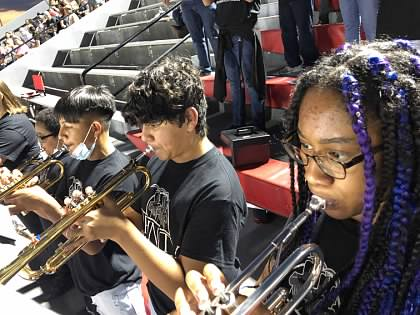
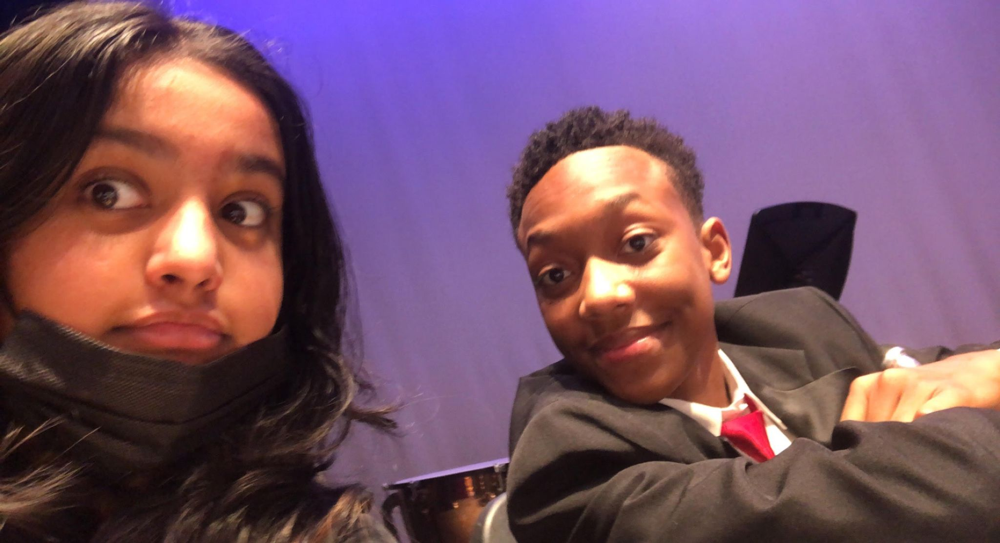
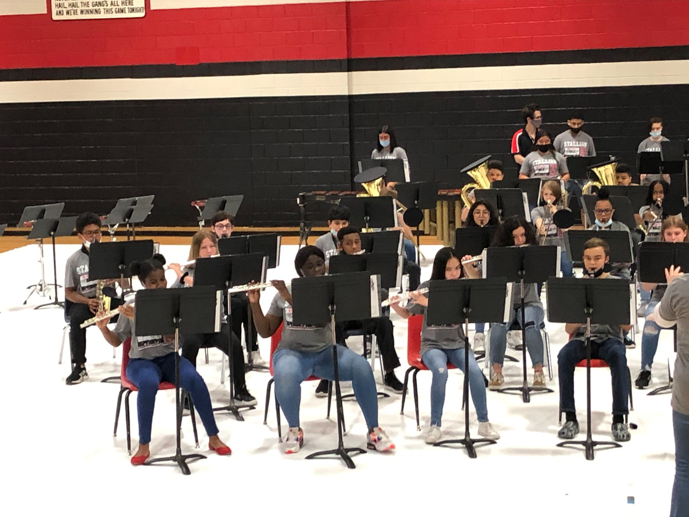

Ms. Stout
- 1st Symphonic Band
- 2nd Co-teach Concert Band
- 3rd Beginner Trombone
- 4th Beginner Tuba & Euphonium
- 5th Beginner Percussion
- 6th Beginner Horn
- 7th Beginner Trumpet
Ensembles
Primarily grades 8–9
Director: Ms. Stout

The Symphonic Band at Euless Junior High consists primarily of 8th and 9th grade students. As the top performing band at Euless, all students are strongly encouraged to enhance their musical success through participation in the private lesson program. Per our Performing Arts curriculum, all performances at concerts and football games are required and graded; as well as the HEB Solo & Ensemble Contest in February and the Region 31 UIL Contest in April. Additionally, the musicians are expected to compete in the HEB Honor Band Auditions in November.
Primarily grades 8–9
Director: Ms. Rutherford

The Concert Band at Euless Junior High consists primarily of 8th and 9th grade students. As the second performing band at Euless, all students are expected to practice on their own 5-6 times a week and are encouraged to enhance their musical success through participation in the private lesson program. Per our Performing Arts curriculum, all performances at concerts and football games are required and graded, as well as the HEB Ensemble Contest in February and our UIL Contest in April.
Primarily grade 7
First-year players

The Beginning Band consists of first year players, primarily in their 7th grade year at Euless Junior High. The band meets in like-instrument classes during the school day and has only three outside-of-school rehearsals.
Class time is spent learning everything one must know to participate in a Performing Band at the end of the year. Beginner Band curriculum consists of goals such as tone production, posture, hand position, intonation, as well as every note, rhythm, articulation, musical concept (dynamics, nuance, style, etc.) that will be necessary to perform the music in Symphonic and Concert Band. In May, every member will compete in an audition process to determine band placement for the following year.
Practice is imperative to the success of a Beginning Band member. Students are expected to practice every day for 20 minutes. For students who find taking their instrument to and from school every day inconvenient, the band hall practice rooms are available before and after school. The band hall is open from 7:00am-4:30pm daily.
Practice doesn't make perfect....Practice makes permanent.
Beginning Band Parents please help your child find a consistent, uninterruped time every day when he/she can focus on developing and nurturing these very imporant skills. Do things like:
School day